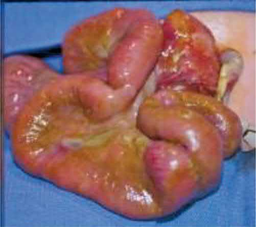
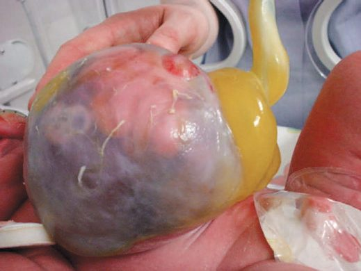
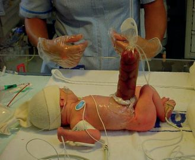
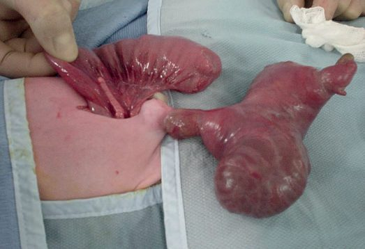

Abdominal Wall Defects
Summary
- Congenital abdominal wall defects (principally gastroschisis and exomphalos (omphalocele)) are distinct neonatal surgical emergencies in which abdominal viscera are exposed or herniated outside the abdominal cavity at birth [1].
- Gastroschisis is a full-thickness defect just to the right of an intact umbilical cord with no covering membrane, whereas exomphalos is a central defect through the umbilical ring itself, with herniated viscera contained within a three-layered membranous sac [1][2].
- The two conditions differ substantially in associated anomalies and overall prognosis: gastroschisis has few associated anomalies but a high rate of intestinal complications, while exomphalos has a high rate of associated chromosomal, cardiac, and syndromic anomalies that primarily determine outcome [3].
- Both conditions are screened for nationally in England.
- Gastroschisis and exomphalos are 2 of the 11 physical conditions covered by the NHS Fetal Anomaly Screening Programme's 20-week scan, which is offered to all pregnant women and performed between 18+0 and 20+6 weeks, with the screening pathway completed by 23+0 weeks [4].
- Where one of the 11 conditions is suspected or identified, providers must make a referral to a local or tertiary-level centre as clinically appropriate, in line with referral standard FASP-S08 [4].
Reported UK birth prevalence differs slightly from the textbook figures: gastroschisis occurs in about 5 babies in every 10,000 (0.05%) and exomphalos in about 4 in every 10,000 (0.04%) [5] About exomphalos).
Definition
Gastroschisis is a full-thickness paraumbilical abdominal wall defect, typically to the right of and separate from a normally inserted umbilical cord, through which bowel (and occasionally stomach, bladder, or gonads) protrudes with no covering sac [2][3]. The defect is always to the right of an intact umbilical cord, at the site of the obliterated right umbilical vein, and the fascial defect is typically 4 cm in diameter [6].
- Exomphalos (omphalocele) is a central abdominal wall defect at the base of the umbilical cord itself, through which viscera herniate into a sac composed of peritoneum, Wharton's jelly, and amnion, in continuity with the umbilical cord [1][2].
- It is subclassified as exomphalos minor (defect <5 cm, bowel only) and exomphalos major (defect >5 cm, containing liver and other abdominal organs) [1].
- Sabiston uses a different size convention: an omphalocele is a central defect generally more than 4 cm in diameter with an intact membranous sac of outer amnion and inner peritoneum, and defects less than 4 cm are arbitrarily designated umbilical cord hernias [6].
- Browse's makes the conceptual point that matters when a neonatal defect is confused with an umbilical hernia: in exomphalos all layers of the abdominal wall are deficient over the protruding intestines except for a translucent sac of peritoneum, Wharton's jelly and amnion, which quickly opacifies once exposed to air, it is a failure of development of the abdominal wall and not a true hernia [7].
Pathophysiology
During normal development the midgut herniates outward through the umbilical ring and continues to grow, returning to the coelomic cavity by the 11th week of gestation and undergoing proper rotation and fixation along with closure of the umbilical ring; if the intestine fails to return, the infant is born with abdominal contents protruding through the defect at the umbilical ring [6].
- Gastroschisis is thought to result from an intrauterine vascular insult, historically attributed to rupture or involution of the right umbilical vein, or disruption of the omphalomesenteric artery, producing a defect lateral to an otherwise normally formed umbilical ring; there is no peritoneal sac, and the exposed bowel becomes thickened, matted, and covered with an inflammatory peel from prolonged exposure to amniotic fluid [2][3].
- The absent sac and direct exposure to amniotic fluid in utero results in intestinal thickening, oedema and inflammation, and this in-utero exposure and trauma is hypothesised to be the cause of the postnatal intestinal dysfunction that dominates the clinical course [6][8].
- If the defect narrows around the mesenteric blood supply in utero, segments of bowel can lose their vascular supply, producing an intestinal atresia found at birth in an otherwise closing gastroschisis defect [2].
Exomphalos results from failure of the normal embryological process in which the midgut, having herniated physiologically into the umbilical cord during the sixth to tenth weeks of gestation, fails to return to the abdominal cavity; the covering sac is therefore a persistence of the normal peritoneal/amniotic layers rather than an acquired defect [2]. Malrotation of the midgut can accompany both gastroschisis and exomphalos because normal intestinal rotation and fixation are disrupted by the ectopic position of the bowel; conditions in which the intestine remains outside the abdomen beyond the tenth week of gestation, including diaphragmatic hernia, gastroschisis and omphalocele, are all associated with anomalies of intestinal rotation [3][6].
Clinical features
- Gastroschisis is usually diagnosed antenatally on ultrasound or from a raised maternal serum alpha-fetoprotein, allowing planned delivery near a specialist neonatal surgical unit; vaginal delivery is appropriate, and there is no evidence to recommend routine Caesarean section [1][2].
- At birth, matted, thickened bowel loops protrude to the right of a normal umbilical cord insertion with no covering membrane [2].
- Exomphalos likewise may present with an abnormal antenatal scan or raised maternal serum AFP, or be identified postnatally as an obvious central defect with the sac and cord in continuity; the diagnosis prompts a careful search for associated cardiac, renal, and chromosomal anomalies [1].
Undescended testis is a common associated finding in 10-20% of infants with gastroschisis; when the testes are found outside the peritoneal cavity they should simply be pushed back into the abdominal cavity without formal orchidopexy at the time of closure or silo placement, since many descend spontaneously into the scrotum [6]. The majority of infants with gastroschisis have a prolonged ileus, and delayed gastrointestinal motility is a hallmark of the disease that leads to prolonged hospitalisation and a need for parenteral nutrition [6][8].


Etiology
Risk factors for gastroschisis include young/teenage maternal age, recreational drug use, smoking, and genitourinary infection during pregnancy; extraintestinal associated anomalies are uncommon, but intestinal atresia is found in 10-20% of cases and is the most common associated gastrointestinal finding [1][2][3]. Sabiston puts intestinal atresia at up to 15% of cases and notes that other major anomalies are rare [6].
- Exomphalos, by contrast, is strongly associated with chromosomal abnormalities (trisomy 13, 18, and 21), cardiac and renal anomalies (found in up to 40%), and recognized syndromes: Beckwith-Wiedemann syndrome (exomphalos, macroglossia, gigantism, hyperinsulinism, and risk of renal/hepatic tumours) and Pentalogy of Cantrell (exomphalos, sternal cleft, ectopia cordis, anterior diaphragmatic hernia, and ventricular septal defect / cardiac defects) [1][3].
- Sabiston reports an overall 50% incidence of associated anomalies, adds trisomy 15 to the chromosomal list, and includes exstrophy of the bladder or cloaca among the associations [6].
- Pulmonary hypoplasia from abnormal diaphragmatic function can also accompany exomphalos [1].
- Malrotation is the most common associated gastrointestinal finding in exomphalos [3].
Diagnosis
- Both conditions are usually identified antenatally by ultrasound or elevated maternal serum AFP, permitting planned delivery at a centre with neonatal surgical support [1].
- For exomphalos, postnatal investigation is directed at identifying associated anomalies: karyotyping/genetic testing for chromosomal abnormalities, blood glucose (for Beckwith-Wiedemann-associated hyperinsulinism), and cardiac imaging in all newborns prior to further surgical management [1].
- A comprehensive diagnostic workup is performed to identify associated anomalies [6].
- For gastroschisis, associated anomalies are rare and no formal additional investigation is routinely required beyond assessment for intestinal atresia at the time of surgery [1][2].
The 20-week scan is performed against the NHS FASP base menu, which sets out the minimum anatomical structures to be assessed, with six images archived, head circumference with the atrium of the lateral ventricle, the suboccipitobregmatic view for transcerebellar diameter, the coronal view of lips with nasal tip, the abdominal circumference measurement, femur length, and a sagittal or coronal view of spine including sacrum [4]. A single repeat scan must be offered and completed by 23+0 weeks where image quality is compromised by maternal BMI, uterine fibroids, abdominal scarring, or fetal position, but where image quality is sub-optimal and an unexpected structural development is suspected, a second opinion should be sought and referral made without delay, with no requirement to offer a repeat appointment [4].
There is a gap in the national standards worth knowing. Test standard FASP-S04 sets performance thresholds for detection at the 20-week scan, but it is reported in only six parts, transposition of the great arteries, atrioventricular septal defect, tetralogy of Fallot, hypoplastic left heart syndrome, coarctation of the aorta, and congenital diaphragmatic hernia (acceptable threshold ≥60.0%, achievable ≥70.0%) [10]. Gastroschisis and exomphalos are screened for but carry no detection-rate threshold, so unlike congenital diaphragmatic hernia there is no audited national performance standard for abdominal wall defect detection [10].
- On delivery, the national parent information sets out two contrasting positions.
- For gastroschisis, mothers usually have a normal birth, with caesarean section discussed only if the gastroschisis is very large; the condition is often associated with a small baby, and it is usual to plan induction of labour between 36 and 40 weeks of pregnancy, though sometimes babies need to be born before 36 weeks [5].
- For exomphalos, mothers likewise usually have a normal birth, with caesarean section discussed only if the exomphalos is very large; no induction window is specified [5].
Scoring and Severity
Severity is principally staged by anatomical size and content rather than a formal scoring system: exomphalos minor (<5 cm, bowel only) versus exomphalos major (>5 cm, containing liver and other viscera, and associated with a higher likelihood of underdeveloped abdominal domain precluding primary closure) [1]. Sabiston's cut-off for distinguishing an omphalocele from an umbilical cord hernia is 4 cm [6].
| Measure | Gastroschisis | Exomphalos |
|---|---|---|
| Birth incidence (Oxford Handbook) | About 1 in 3,000, rising | About 1 in 7,000 |
| Population registry incidence per 100,000 live births | 20 | 12 (major and minor combined) |
| Fascial defect size | Typically 4 cm | Minor <5 cm; major >5 cm |
| Associated anomalies | Uncommon; intestinal atresia 10-20% | 50% overall; cardiac/renal up to 40% |
- Table reformats the size and incidence figures [1][2][6].
- For comparison within the same registry table, congenital diaphragmatic hernia occurs at 20 per 100,000 live births [2].
- Mortality for antenatally detected exomphalos with an associated major cardiac or chromosomal anomaly, when parents opt for termination, may be as high as 80% in that subgroup, reflecting the severity of associated disease rather than the abdominal wall defect itself [1].
Treatment and Management
Immediate postnatal management of both conditions focuses on protecting the exposed viscera, preventing heat and fluid loss, and preparing for staged surgical closure.
Gastroschisis
The exposed bowel and abdomen are wrapped in clear plastic film (cling film/Saran wrap) taking care to avoid twisting or kinking the mesenteric blood supply, a large-bore nasogastric tube is placed on free drainage to decompress the stomach, and aggressive intravenous fluid resuscitation is instituted to compensate for large evaporative losses from the exposed bowel; broad-spectrum antibiotics are given and the infant kept nil by mouth on parenteral nutrition [1][2]. Sabiston describes the same principle using a warm, saline-filled plastic "bowel bag" placed up to the nipple line, which minimises heat and fluid losses while allowing gross inspection of the eviscerated bowel at all times and identification of inadvertent twisting [6].
Reduction and closure should proceed cautiously: attempting primary reduction under excessive tension can raise intra-abdominal pressure enough to compress the inferior vena cava, compromise ventilation (evidenced by rising peak inspiratory pressures), and precipitate abdominal compartment syndrome, so if reduction is not safely achievable the bowel should instead be placed in a silo for staged, gradual reduction [11]. Primary reduction succeeds in 50-80% of cases, and the intraoperative safety threshold is a maximum intra-abdominal pressure of less than 15 mmHg [6].
Exomphalos
- The sac is protected, an NGT placed, and fluids managed; preservation of an intact omphalocele sac is key in initial management, and great care should be taken to prevent hypothermia [1][2][6].
- Minor defects are usually suitable for reduction and primary closure, while exomphalos major, where primary reduction is precluded by an underdeveloped abdominal cavity, may instead be managed by encouraging epithelialization of the intact sac with a topical antibacterial agent (e.g., manuka honey or silver sulfadiazine), converting the defect into a large ventral hernia suitable for delayed closure around one year of age; close observation for abdominal compartment syndrome is mandated if early closure of exomphalos major is attempted [1][2].
- Sabiston names the same technique for giant omphaloceles with different agents, topical escharotics such as povidone-iodine ointment or silver nitrate, which allow the sac to thicken and epithelialise [6].
Fetal intervention
There is currently no proven effective in-utero intervention for gastroschisis. Early animal work showed in-utero surgical intervention to be safe in a fetal sheep model, and the theoretical goal is to minimise the postnatal consequences, gastroschisis is one of the leading causes of short-bowel syndrome and intestinal transplantation in children, but most attempts at predicting outcome by prenatal markers have been unsuccessful, and maternal-fetal intervention remains limited to experimental models, with an open phase I feasibility study evaluating fetoscopic in-utero repair of complex gastroschisis [8].
Surgeries
Primary closure, attempted at the first operation when the defect is small enough and the abdominal domain adequate; used for exomphalos minor and for gastroschisis when the viscera can be reduced without excessive intra-abdominal pressure [1]. Primary surgical closure of a small- to medium-sized omphalocele is preferred [6].
- Silo/staged reduction, for gastroschisis, if primary closure is not safely achievable (e.g., peak inspiratory pressures rise excessively during attempted reduction), the bowel is placed into a silo, either a bedside preformed spring-loaded silastic silo or a surgically sutured silo using silastic sheeting or an empty intravenous fluid bag, and gradually squeezed down over roughly 7-10 days as bowel oedema resolves, followed by delayed primary or secondary closure; a preformed bedside silo can sometimes avoid the need for general anaesthesia altogether [1][2][11].
- A ringed silo bag can be placed at the bedside with the bowel reduced gradually over several days, followed by operative suture closure of fascia and skin [6].
- For exomphalos major, an analogous silastic mesh silo with staged reduction is an alternative to sac epithelialization, and larger omphalocele defects may alternatively be closed with a prosthetic patch (e.g., Gore-Tex), a porcine small intestinal submucosa-derived biomaterial, or a skin flap closure [1][6].
Sutureless delayed spontaneous closure, an alternative to operative fascial closure for gastroschisis performed at the bedside: the bowel is reduced into the abdomen, the defect is covered with or without the umbilical cord, and a watertight clear dressing is applied. Once the contents adhere in the intra-abdominal position at around 4 days, the dressing is changed to a dry dressing over the cord remnant or a Vaseline dressing over exposed bowel [6].
Delayed/secondary closure, after staged silo reduction, or after sac epithelialization in exomphalos major, definitive closure of the resulting ventral hernia is performed later, once the infant is stable and the abdominal domain has increased; parenteral nutrition is typically required for around 4 weeks or longer while intestinal motility recovers in gastroschisis [2].
Management of associated atresia, where intestinal atresia or stenosis accompanies gastroschisis, inflammation of the bowel precludes immediate repair: the abdominal wall is closed first, and surgery for the atresia is performed 6 to 8 weeks later [6].

Complications
Intestinal complications dominate the course of gastroschisis: bowel matting, thickening, atresia, and volvulus are common, and the exposed bowel can sustain significant vascular compromise if the abdominal wall defect narrows around the mesentery in utero [2][12]. Late necrotising enterocolitis has been reported in up to 20% of patients after gastroschisis repair, and infants frequently develop cholestasis from prolonged parenteral nutrition; managing dysfunctional intestine and short-gut syndrome remains one of the hardest problems in the condition [6].
Attempted reduction under tension risks abdominal compartment syndrome, evidenced intraoperatively by rising ventilator peak inspiratory pressures, and mandates placement of a silo rather than forced primary closure [11]. For exomphalos, complications are dominated by the associated structural and chromosomal anomalies (cardiac, renal, and syndromic) rather than the abdominal wall defect itself, and abdominal compartment syndrome is a specific risk if early closure of a large (major) defect is attempted [1][2].

Prognosis
- Overall prognosis is worse for exomphalos than for gastroschisis, principally because of the higher burden of associated congenital anomalies (chromosomal, cardiac, and syndromic) in exomphalos, whereas gastroschisis, despite its higher rate of intestinal complications, has a comparatively low rate of extraintestinal associated anomalies [3].
- Overall survival for infants with an omphalocele depends largely on lung maturity and the severity of associated anomalies, and infants with gastroschisis have excellent survival despite the burden of intestinal dysfunction [6][8].
- Malrotation can complicate either condition [3].
- The national parent information gives outcome figures that a UK surgeon will be expected to be able to quote.
- For gastroschisis, about 9 in 10 (90%) babies make a full recovery, with an increased chance of being born early and smaller than other babies; most cases are classed as "simple," with straightforward treatment and recovery, while "complex" cases often involve a blockage in the bowel and a more complicated course.
- A small number of babies still have difficulty feeding or absorbing food after 4 weeks, which is not usually serious and usually resolves in time; hospital stay varies from weeks to months [5] Treatment).
For exomphalos, more than 9 in 10 (over 95%) of babies who have only exomphalos make a full recovery, but the chance of a full recovery is lower if the exomphalos is very large, if the baby has other physical or genetic conditions, or if the baby is born significantly before their due date; ongoing problems can include feeding and breathing difficulties, most of which improve as the child gets older, and hospital stay varies from days to months [5] Treatment). About 75 out of 100 babies (75%) with exomphalos major have it repaired in an operation almost straight after birth; where the sac is large and the contents will not fit back into the abdomen, options include an early operation to place it in a silo, or treatment with special dressings allowing the skin to grow slowly over the sac, with a later operation to close the gap in the abdominal muscles [5].
Screening leads to a discussion of options, which include continuing or ending the pregnancy; parents should be offered a choice of where and how to end a pregnancy if that is their decision, and support from Antenatal Results and Choices (ARC) and the Gastroschisis Exomphalos Extrophies Parental Support Group (GEEPS) is signposted nationally. For both conditions, a subsequent baby is unlikely to be affected [5] Next steps and choices; Source: NHS FASP Condition Information, Exomphalos, Future pregnancies).
References
- Oxford Handbook of Clinical Surgery, 5th ed., Ch. 13 Paediatric surgery
- Bailey & Love's Short Practice of Surgery, 28th ed., Ch. 18 Neonatal surgery
- The ABSITE Review, 2022, Ch. 18/Pediatric Surgery section
- NHS Fetal Anomaly Screening Programme (FASP): programme overview and screening programme handbook, NHS England, 20-week screening scan, 1; 20-week screening scan, 1.1; 20-week screening scan, 1.2; 20-week screening scan, 2; 20-week screening scan, 2.1; Programme overview www.gov.uk
- NHS Fetal Anomaly Screening Programme: condition information for parents — gastroschisis, and abdominal wall defects: exomphalos, NHS England, Exomphalos; Exomphalos (Longer term health; Exomphalos, Follow-up tests and appointments; Exomphalos, Treatment; Gastroschisis; Gastroschisis (About gastroschisis; Gastroschisis (Longer term health; Gastroschisis (Next steps and choices; Gastroschisis, Treatment www.gov.uk
- Sabiston Textbook of Surgery, 22nd ed., Ch. 117 Pediatric Surgery
- Browse's Introduction to the Symptoms and Signs of Surgical Disease, 6th ed., Ch. 14 The abdominal wall, hernias and the umbilicus
- Sabiston Textbook of Surgery, 22nd ed., Ch. 118 Maternal-Fetal Surgery
- Maingot's Abdominal Operations, 13th ed., Ch. 9
- NHS Fetal Anomaly Screening Programme: fetal anomaly screening standards valid for data collected from 1 April 2026, NHS England, FASP-S04, 4.1; FASP-S04, 4.4 www.gov.uk
- Schwartz's Principles of Surgery: ABSITE and Board Review, Ch. 39 Pediatric Surgery
- The ABSITE Review, 2022, Ch. Neonatal Abdominal Wall Defects summary box